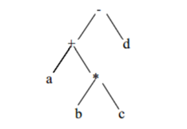
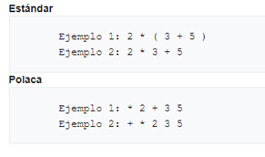
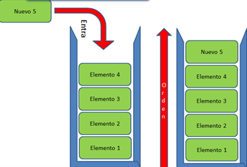
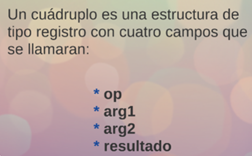
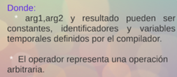
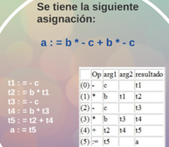

La notación polaca es la originada por un Autómata con pila, en la que los operadores siempre preceden a los operandos sobre los que actúan, y que tiene la ventaja de no necesitar paréntesis:
• Se utiliza principalmente para la representación de expresiones aritméticas.
• Expresión a notación polaca inversa.
Algoritmo
Representa la expresión en forma de árbol sintáctico.
Recorrer el árbol en postorden
Ejemplo: a + b * c-d

Código a b c * + d-
Ventajas y desventajas de la notación polaca
• Generación de código: simple, no utiliza registros.
• Optimización: es difícil de reordenar ya que hay que considerar el contenido de la pila.
• Interpretación rápida: es muy fácil de interpretar ya que solo necesita una pila.
• Transportable: si, ya que todos los procesadores implementan una pila.

2.2.2 Código P
El código P comenzó como un código ensamblador objetivo estándar producido por varios compiladores Pascal en la década de 1970 y principios de la de 1980. Fue diseñado para código real para una máquina de pila hipotética la idea era hacer que los compiladores de Pascal se transportaran fácilmente requiriendo solo que se volviera a escribir el intérprete de la maquina P para una plataforma, el código P también aprobado ser útil como código intermedio y sean utilizado varias extensiones y modificaciones del mismo en diverso compiladores de código nativo, la mayor parte para lenguaje tipo Pascal.
Como el código P fue diseñado para ser directamente ejecutable, contiene una descripción implícita de un ambiente de ejecución particular que incluye tamaños de datos, además de mucha información específica para la maquina P, que debe conocer si se desea que un programa de código P se comprensible. La máquina P está compuesta por una memoria de código, una memoria de datos no específica para variables nombre das y una pila para datos temporales, junto como cualquiera registro que sea necesario para mantener la pila y apoyar la ejecución.
2.2.3 Triplos
• (operador), (operacion1), (operador2)
El resultado se asocia al número de tripleta
Ejemplo: W * X + (Y + Z)
1. *, W, X
2. +, Y, Z
3. +, (1), (2)
Control de flujo: IF X>Y THEN Z=X ELSE Z=Y+1
1. >, X, Y
2. Saltar si falso, (1), 5
3. =, Z, X
4. Saltar,, 7
5. +, Y, 1
6. =, Z, (5)
Problema
La optimización supone mover tripletas y hay que recalcular las referencias.

2.2.4 Cuádruplos
• (operador),(operacion1),(operador2),(resultado)
Ejemplo:
(A+B)*(C+D)-E
+, A, B, T1
+, C, D, T2
*, T1, T2, T3
-, T3, E, T4
Las cuádruplas facilitan la aplicación de muchas optimizaciones, pero hay que tener un algoritmo para la reutilización de las variables temporales (reutilización de registros del procesador).
  
Bibliografia:
Lenguajes y Automatas 2. (2020). 2.2.2 Código P . 2021, de Blogspot Sitio web: https://equiponegro8.blogspot.com/2020/03/2_56.html
S/N. (S/N). UNIDAD II. 14/04/2021, de ITPN Sitio web: http://itpn.mx/recursosisc/7semestre/leguajesyautomatas2/Unidad%20II.pdf